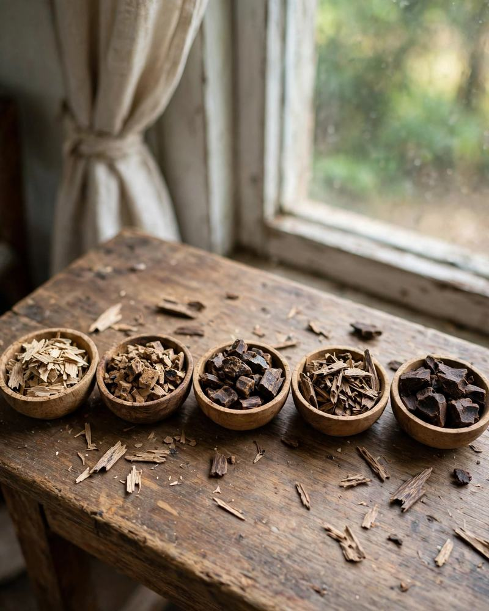

惠安系和星洲系是贸易和品香圈里的习惯分法，按产区和香韵风格划分，不是植物学的正式分类。两个体系的沉香树同属瑞香科沉香属，物种有重叠，香韵也有交叉，边界不是死的。
惠安系主要包括越南、柬埔寨、老挝、缅甸、泰国，以及中国的海南、广东、广西、云南、福建。星洲系主要包括印尼、马来西亚、文莱、巴布亚新几内亚。记住这个地理分界，再往下看就清楚了。
惠安系的香韵以清甜、凉意、花香、蜜韵为主。室温下香味清雅，上炉后层次分明，前调凉、中调甜、尾调干净。越南芽庄、柬埔寨菩萨奇、海南沉香都是这个路子。
油脂上，惠安系的油线相对细腻，颜色棕褐为主，深浅过渡自然。适合喜欢清雅香韵、日常品香和熏香的人。
星洲系的香韵以醇厚、药香、木香、乳香为主。香味浓郁饱满，留香时间长，上炉后香韵厚重绵长。印尼加里曼丹、马来西亚、文莱都是这个风格。
油脂上，星洲系的油脂往往更丰富，颜色偏深，密度较大。适合喜欢浓郁香韵、做手串和雕件的人。
香韵是核心的差别：惠安系清、星洲系厚。其次是油脂和颜色：惠安系细腻、星洲系浓重。用途上，惠安系多用于品香熏香，星洲系多用于手串雕件，但这只是常见情况，不是硬性规定。
价格上，两个体系内部跨度都很大，不能简单说哪个贵。顶级的惠安系和顶级的星洲系都不便宜，入门级的两者也都有。价格看的是具体那块料的油脂、香韵和稀缺程度，不是体系本身。
日常品香、熏香，喜欢清雅凉意的，先看惠安系。做手串、喜欢浓郁厚重的，先看星洲系。预算有限想入门，两个体系都有性价比不错的选择，比如老挝料和部分印尼料。
最重要的是亲自闻。香韵是主观感受，别人说的“好闻”不等于你闻着好闻。条件允许的话，两种体系的碎料各买一点，上炉对比一次，比看十篇文章管用。
“芽庄”“加里曼丹”这些产区名，市场上借用的很多。检测证书只证明材质是沉香属，不证明产地。产区要靠溯源：产地、批次、结香方式能不能说清。说不清的，先别买。
另外，缅甸、泰国这些地方的料，香韵介于两个体系之间，很难硬归到某一边。遇到这种料，按实际香韵判断，别纠结它属于哪个体系。
| 看什么 | 惠安系 | 星洲系 |
|---|---|---|
| 主要产区 | 越南、柬埔寨、老挝、缅甸、海南、广东 | 印尼、马来西亚、文莱、巴布亚 |
| 香韵 | 清甜、凉意、花香、蜜韵 | 醇厚、药香、木香、乳香 |
| 油脂 | 油线细腻，颜色棕褐 | 油脂丰富，颜色偏深 |
| 常见用途 | 品香、熏香、碎料 | 手串、雕件、摆件 |
| 价格 | 内部跨度大，看具体料子 | 内部跨度大，看具体料子 |